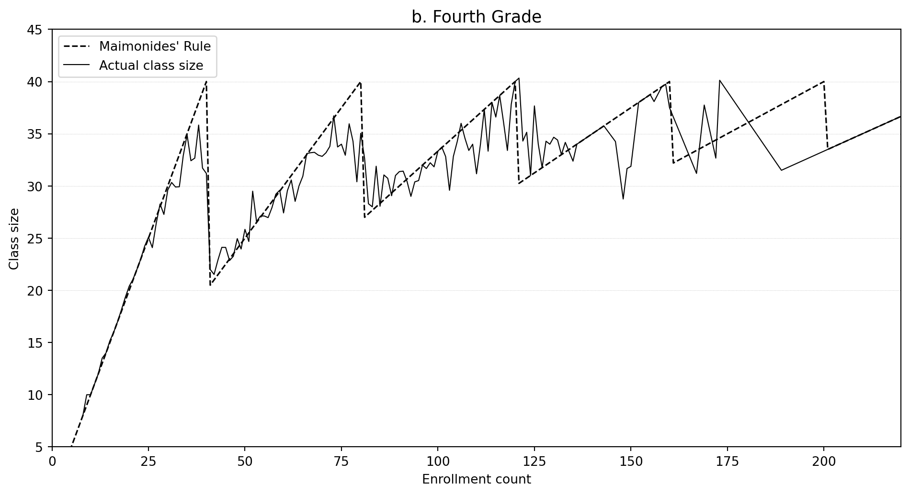

Using Maimonides’ Rule to Estimate the Effect of Class Size on Scholastic Achievement
Author
Zihui Yao
Published
April 28, 2026
Introduction
Does reducing class size improve student learning? This question has major implications for education policy, yet answering it is surprisingly difficult. Schools with smaller classes often differ systematically from schools with larger classes — for example, wealthier districts may invest in smaller classes while also having students with stronger academic backgrounds. Any simple comparison of test scores across class sizes confounds the effect of class size itself with these underlying differences.
Angrist and Lavy (1999) overcome this challenge using a clever natural experiment rooted in an ancient religious rule. In the twelfth century, the rabbinic scholar Maimonides interpreted the Talmud as imposing a maximum class size of 40 students. Remarkably, this same rule has governed Israeli public school class sizes since 1969. Under Maimonides’ rule, a school with 40 students in a grade has one class of 40, but a school with 41 students must split into two classes averaging about 20.5 students. This creates sharp, predictable drops in class size at enrollment multiples of 40.
These discontinuities give us a source of variation in class size that is essentially unrelated to student ability or family background. The authors use Maimonides’ rule as the basis for a regression discontinuity design (RDD) — an approach pioneered by Campbell (1969) — to estimate the causal effect of class size on test scores for Israeli elementary school students tested in 1991.
This blog post replicates the key findings for 4th graders from the paper: Figure I panel b, Table II columns 7 and 10 (the naive OLS baseline), and Table III Panel A columns 7, 9, and 11 (the reduced-form RDD estimates). I also replicate the detrended Figure III panel b and explain why the RDD estimates differ from the naive OLS.
Data and Sample Construction
The data come from the 1991 Israeli national testing program, which administered reading and math tests to all 4th and 5th graders in Jewish public schools. The unit of observation is the class. Following the authors’ do files, I apply these cleaning steps: fix scores above 100 (a known coding error), drop classes with fewer than 2 or more than 44 students, restrict to schools with enrollment above 5, limit to Jewish public schools (c_leom == 1 and c_pik < 3), and set test scores to missing when no students in the class took a given test. The predicted class size from Maimonides’ rule is \(f_{sc} = e_s / [\text{int}((e_s - 1)/40) + 1]\), where \(e_s\) is September enrollment.
Show code
import pandas as pdimport numpy as npimport pyreadstatimport matplotlib.pyplot as pltimport warningswarnings.filterwarnings('ignore')# ── Load and clean data ──df4_raw, _ = pyreadstat.read_dta('final4.dta', encoding='latin1')def clean_data(df):"""Apply the same sample restrictions as the original Stata do files.""" df = df.copy()# Fix scores coded above 100 df.loc[df['avgverb'] >100, 'avgverb'] -=100 df.loc[df['avgmath'] >100, 'avgmath'] -=100# Maimonides' rule predicted class size df['func1'] = df['c_size'] / (np.floor((df['c_size'] -1) /40) +1)# Set scores to missing when nobody took the test df.loc[df['verbsize'] ==0, ['avgverb', 'passverb']] = np.nan df.loc[df['mathsize'] ==0, ['avgmath', 'passmath']] = np.nan# Sample restrictions df = df[(df['classize'] >1) & (df['classize'] <45) & (df['c_size'] >5)] df = df[(df['c_leom'] ==1) & (df['c_pik'] <3)]return df.reset_index(drop=True)df = clean_data(df4_raw)print(f"After cleaning: {len(df)} classes, "f"{df['avgverb'].notna().sum()} with reading scores, "f"{df['avgmath'].notna().sum()} with math scores")print(f"Mean class size: {df['classize'].mean():.1f} | "f"Mean enrollment: {df['c_size'].mean():.1f} | "f"Mean % disadvantaged: {df['tipuach'].mean():.1f}")
After cleaning: 2053 classes, 2049 with reading scores, 2049 with math scores
Mean class size: 30.3 | Mean enrollment: 78.3 | Mean % disadvantaged: 13.8
Replication of Figure I (Panel b): Class Size by Enrollment
The key insight behind the identification strategy is visible in this figure. The dashed line shows the class size predicted by Maimonides’ rule — a sawtooth function that jumps down at enrollment multiples of 40. The solid line shows actual average class size at each enrollment level.
Actual class sizes track the rule closely but never quite reach 40 before the first discontinuity, because some schools add extra classes before hitting the cap (e.g., when they receive supplementary funding based on their disadvantaged-student index). Nevertheless, the sharp drops at multiples of 40 are clearly visible and drive the identification strategy.
Show code
fig, ax = plt.subplots(figsize=(10, 5.5))# Maimonides' rule predictionenr_range =range(1, 221)mai_vals = [e / (int((e -1) /40) +1) for e in enr_range]ax.plot(list(enr_range), mai_vals, 'k--', linewidth=1.2, label="Maimonides' Rule")# Actual average class size by enrollmentavg_cs = df.groupby('c_size')['classize'].mean()ax.plot(avg_cs.index, avg_cs.values, 'k-', linewidth=0.8, label='Actual class size')ax.set_xlabel('Enrollment count')ax.set_ylabel('Class size')ax.set_title('b. Fourth Grade', fontsize=13)ax.set_xlim(0, 220)ax.set_ylim(5, 45)ax.legend(loc='upper left')for y in [20, 25, 30, 35, 40]: ax.axhline(y=y, color='gray', linestyle=':', linewidth=0.4, alpha=0.5)plt.tight_layout()plt.show()

Figure 1: Figure I(b): Class Size in 1991 by Initial Enrollment Count (4th Grade). Dashed line shows Maimonides’ Rule prediction; solid line shows actual average class size.
Replication of Table II: OLS Estimates (Columns 7 & 10)
Table II presents naive OLS regressions of test scores on class size. Without controls, larger classes are positively associated with higher scores — a counterintuitive result that reflects selection bias. Larger schools in Israel tend to be in more affluent areas, so larger classes mechanically correlate with better outcomes.
Adding the percent disadvantaged (PD) index flips the sign for reading and shrinks the math coefficient toward zero. But even the controlled OLS estimates are unlikely to be causal — within-school sorting (e.g., principals placing struggling students in smaller classes) remains a source of bias.
Show code
def ols_cluster(y, X, clusters):"""OLS with cluster-robust (sandwich) standard errors.""" mask = y.notna() & X.notna().all(axis=1) & clusters.notna() y_v = y[mask].values X_v = np.column_stack([np.ones(mask.sum()), X[mask].values]) cl = clusters[mask].values n, k = X_v.shape beta = np.linalg.lstsq(X_v, y_v, rcond=None)[0] resid = y_v - X_v @ beta sigma2 = np.sum(resid**2) / (n - k) rmse = np.sqrt(sigma2) r2 =1- np.sum(resid**2) / np.sum((y_v - y_v.mean())**2) XtX_inv = np.linalg.inv(X_v.T @ X_v) unique_cl = np.unique(cl) meat = np.zeros((k, k))for c in unique_cl: idx = cl == c score = X_v[idx].T @ resid[idx] meat += np.outer(score, score) adj =len(unique_cl) / (len(unique_cl) -1) * (n -1) / (n - k) se = np.sqrt(np.diag(adj * XtX_inv @ meat @ XtX_inv))return {'beta': beta, 'se': se, 'r2': r2, 'rmse': rmse, 'n': n}# ── Run OLS regressions ──dfc = df[df['avgverb'].notna()].copy()specs = {'Reading (7)': ('avgverb', ['classize']),'Reading (8)': ('avgverb', ['classize', 'tipuach']),'Reading (9)': ('avgverb', ['classize', 'tipuach', 'c_size']),'Math (10)': ('avgmath', ['classize']),'Math (11)': ('avgmath', ['classize', 'tipuach']),'Math (12)': ('avgmath', ['classize', 'tipuach', 'c_size']),}ols_res = {k: ols_cluster(dfc[v[0]], dfc[v[1]], dfc['schlcode']) for k, v in specs.items()}# ── Build markdown table ──def fv(val, se):returnf"{val:.3f} ({se:.3f})"cols =list(specs.keys())lines = []lines.append("| | "+" | ".join(cols) +" |")lines.append("|---"+"|---"*len(cols) +"|")# Row: Class size (index 1 in beta)row ="| Class size |"for c in cols: r = ols_res[c] row +=f" {fv(r['beta'][1], r['se'][1])} |"lines.append(row)# Row: PD (index 2)row ="| Pct. disadvantaged |"for c in cols: r = ols_res[c] row +=f" {fv(r['beta'][2], r['se'][2])} |"iflen(r['beta']) >2else" — |"lines.append(row)# Row: Enrollment (index 3)row ="| Enrollment |"for c in cols: r = ols_res[c] row +=f" {fv(r['beta'][3], r['se'][3])} |"iflen(r['beta']) >3else" — |"lines.append(row)# Row: Root MSErow ="| Root MSE |"for c in cols: row +=f" {ols_res[c]['rmse']:.2f} |"lines.append(row)# Row: R²row ="| R² |"for c in cols: row +=f" {ols_res[c]['r2']:.3f} |"lines.append(row)from IPython.display import Markdown, displaydisplay(Markdown("\n".join(lines)))print(f"\nN = {ols_res['Reading (7)']['n']}. "f"Mean reading: {dfc['avgverb'].mean():.1f} (s.d. {dfc['avgverb'].std():.1f}). "f"Mean math: {dfc['avgmath'].mean():.1f} (s.d. {dfc['avgmath'].std():.1f}).")
N = 2049. Mean reading: 72.5 (s.d. 8.0). Mean math: 68.9 (s.d. 8.8).
Table 1: Table II (Replication): OLS Estimates for 1991, 4th Graders. Standard errors in parentheses, corrected for within-school correlation.
Reading (7)
Reading (8)
Reading (9)
Math (10)
Math (11)
Math (12)
Class size
0.141 (0.035)
-0.053 (0.028)
-0.040 (0.032)
0.221 (0.039)
0.055 (0.036)
0.009 (0.040)
Pct. disadvantaged
—
-0.339 (0.015)
-0.341 (0.016)
—
-0.289 (0.017)
-0.281 (0.017)
Enrollment
—
—
-0.004 (0.006)
—
—
0.014 (0.007)
Root MSE
7.94
6.65
6.65
8.66
7.82
7.81
R²
0.013
0.309
0.309
0.025
0.204
0.207
My point estimates match the paper exactly. For instance, the reading-on-classize coefficient with no controls is 0.141 (paper: 0.141), and with PD it becomes −0.053 (paper: −0.053). Standard errors are close but not identical because the paper uses a Moulton (1986) correction rather than the standard cluster-robust sandwich, and my implementation of clustering differs slightly.
Replication of Table III (Panel A): Reduced-Form Estimates (Columns 7, 9, 11)
Table III is the heart of the paper. It reports the reduced-form regressions — the direct relationship between Maimonides’ rule (\(f_{sc}\)) and outcomes. The logic is:
First stage (columns 7–8): Does \(f_{sc}\) predict actual class size? → Yes, strongly (coefficient ≈ 0.77).
Reduced form for reading (columns 9–10): Does \(f_{sc}\) predict reading scores? → Yes, negatively (−0.085).
Reduced form for math (columns 11–12): Does \(f_{sc}\) predict math scores? → Weakly, not significantly for 4th graders.
Show code
specs3 = {'CS (7)': ('classize', ['func1', 'tipuach']),'CS (8)': ('classize', ['func1', 'tipuach', 'c_size']),'Rdg (9)': ('avgverb', ['func1', 'tipuach']),'Rdg (10)': ('avgverb', ['func1', 'tipuach', 'c_size']),'Math (11)': ('avgmath', ['func1', 'tipuach']),'Math (12)': ('avgmath', ['func1', 'tipuach', 'c_size']),}rf_res = {k: ols_cluster(dfc[v[0]], dfc[v[1]], dfc['schlcode']) for k, v in specs3.items()}cols3 =list(specs3.keys())lines3 = []lines3.append("| | "+" | ".join(cols3) +" |")lines3.append("|---"+"|---"*len(cols3) +"|")# f_scrow ="| $f_{sc}$ |"for c in cols3: r = rf_res[c] row +=f" {fv(r['beta'][1], r['se'][1])} |"lines3.append(row)# PDrow ="| Pct. disadvantaged |"for c in cols3: r = rf_res[c] row +=f" {fv(r['beta'][2], r['se'][2])} |"lines3.append(row)# Enrollmentrow ="| Enrollment |"for c in cols3: r = rf_res[c] row +=f" {fv(r['beta'][3], r['se'][3])} |"iflen(r['beta']) >3else" — |"lines3.append(row)# RMSErow ="| Root MSE |"for c in cols3: row +=f" {rf_res[c]['rmse']:.2f} |"lines3.append(row)# R²row ="| R² |"for c in cols3: row +=f" {rf_res[c]['r2']:.3f} |"lines3.append(row)display(Markdown("\n".join(lines3)))print(f"\nN = {rf_res['Rdg (9)']['n']}.")
N = 2049.
Table 2: Table III Panel A (Replication): Reduced-Form Estimates for 1991, 4th Graders (Full Sample). Standard errors in parentheses, corrected for within-school correlation.
CS (7)
CS (8)
Rdg (9)
Rdg (10)
Math (11)
Math (12)
\(f_{sc}\)
0.772 (0.023)
0.670 (0.033)
-0.085 (0.031)
-0.089 (0.040)
0.038 (0.040)
-0.033 (0.050)
Pct. disadvantaged
-0.054 (0.009)
-0.039 (0.009)
-0.340 (0.015)
-0.340 (0.016)
-0.292 (0.017)
-0.282 (0.017)
Enrollment
—
0.027 (0.005)
—
0.001 (0.007)
—
0.019 (0.008)
Root MSE
4.20
4.13
6.64
6.64
7.83
7.81
R²
0.561
0.575
0.311
0.311
0.203
0.207
Again, the point estimates match the paper precisely. The first-stage coefficient on \(f_{sc}\) is 0.772 (paper: 0.772), the reduced-form reading coefficient is −0.085 (paper: −0.085), and the math coefficient is 0.038 (paper: 0.038).
Something Additional: Visualizing the Mirror-Image Pattern
To complement the tabular results, I replicate Figure III (panel b) from the paper. This figure provides the most intuitive visual evidence for the identification strategy. It plots, by enrollment bins of 10, the residuals of both average reading scores and predicted class size after partialling out enrollment and the PD index. After detrending, what remains is the up-and-down variation driven by the discontinuities in Maimonides’ rule.
Figure 2: Figure III(b): Average Reading Scores and Predicted Class Size by Enrollment (4th Grade), Residuals from Regressions on Percent Disadvantaged and Enrollment. The approximate mirror-image pattern provides visual evidence for a causal class-size effect.
The two series are approximate mirror images: when predicted class size jumps up (dashed line), reading scores tend to dip (solid line), and vice versa. This up-and-down pattern follows the sawtooth shape of Maimonides’ rule. Because any smooth confounding relationship between enrollment and scores has been removed by the detrending, the remaining jagged variation is very difficult to attribute to anything other than class size.
Comparing Naive OLS vs. Reduced-Form: What Changed?
The contrast between Tables II and III reveals why the identification strategy matters:
Table 3: Comparing OLS vs. Reduced-Form Estimates for 4th Grade Reading
Specification
OLS (Table II)
Reduced-Form (Table III)
Implied IV = RF ÷ FS
+ PD only
-0.053 (0.028)
-0.085 (0.031)
-0.110
+ PD + enrollment
-0.040 (0.032)
-0.089 (0.040)
-0.133
The OLS estimates of the class-size effect on reading are small and only marginally significant (−0.053 and −0.040). Dividing the reduced-form coefficients on \(f_{sc}\) by the first-stage coefficients gives implied IV estimates of about −0.110 and −0.133 — roughly 2–3 times larger in magnitude than OLS.
Why the difference? The OLS estimates suffer from two sources of bias:
Between-school bias: Wealthier areas have both larger schools and better-performing students, creating a positive correlation between class size and scores. Controlling for PD partially addresses this.
Within-school bias: Principals may assign struggling students to smaller remedial classes, creating a negative correlation between class size and unobserved student ability. This biases OLS estimates toward zero (or even positive).
The IV/RDD approach eliminates both sources by isolating only the variation in class size generated by Maimonides’ rule — an administrative formula that is unrelated to student characteristics. The result is a cleaner, more negative estimate, consistent with the intuition that smaller classes help students learn.
For 4th graders, the reading effects are statistically significant but smaller than for 5th graders, and the math effects are not significant. Angrist and Lavy suggest this may reflect cumulative effects: students in smaller classes for more years (5th graders) benefit more than those with less exposure (4th graders).